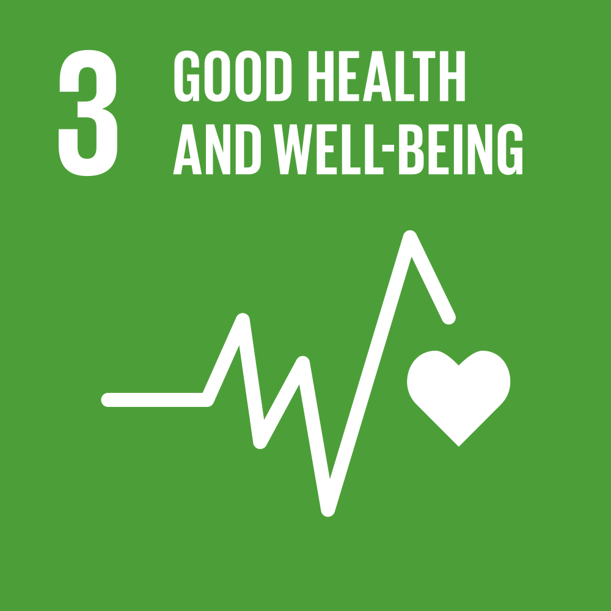
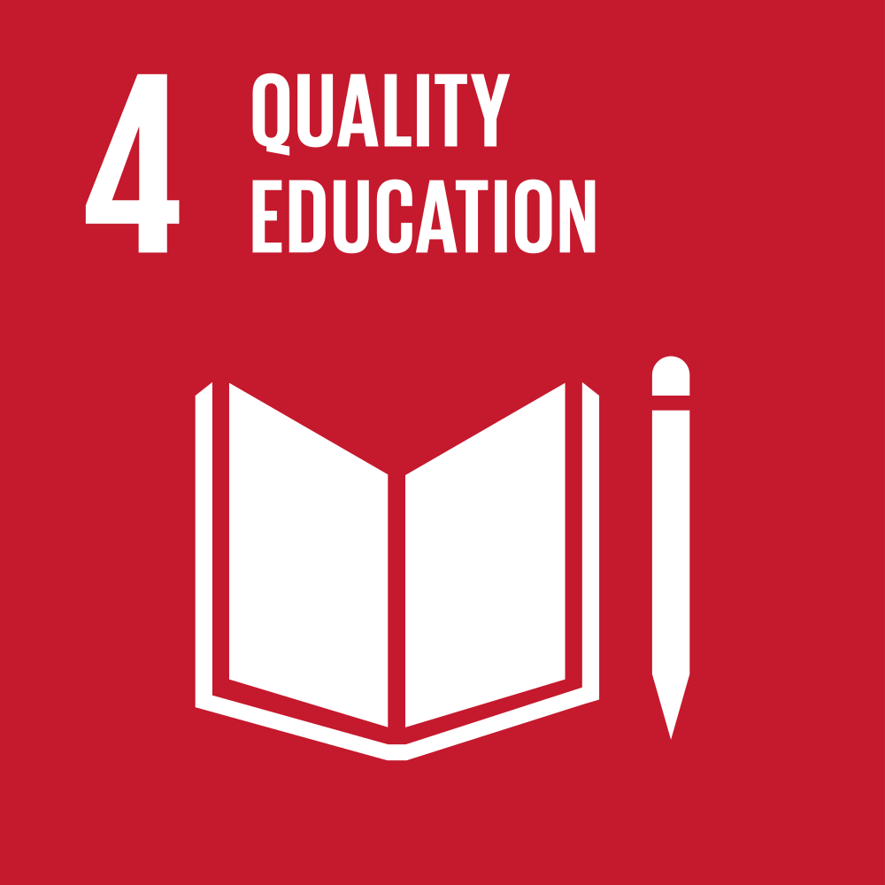
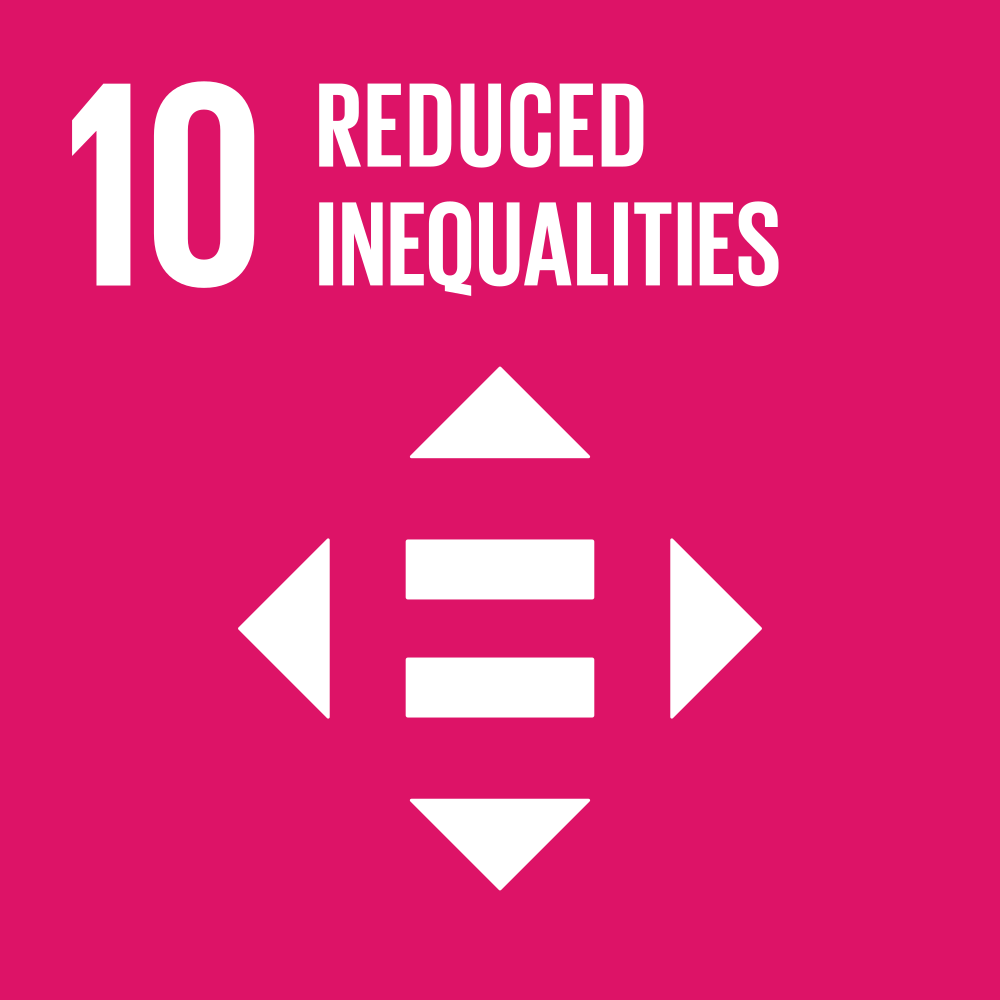
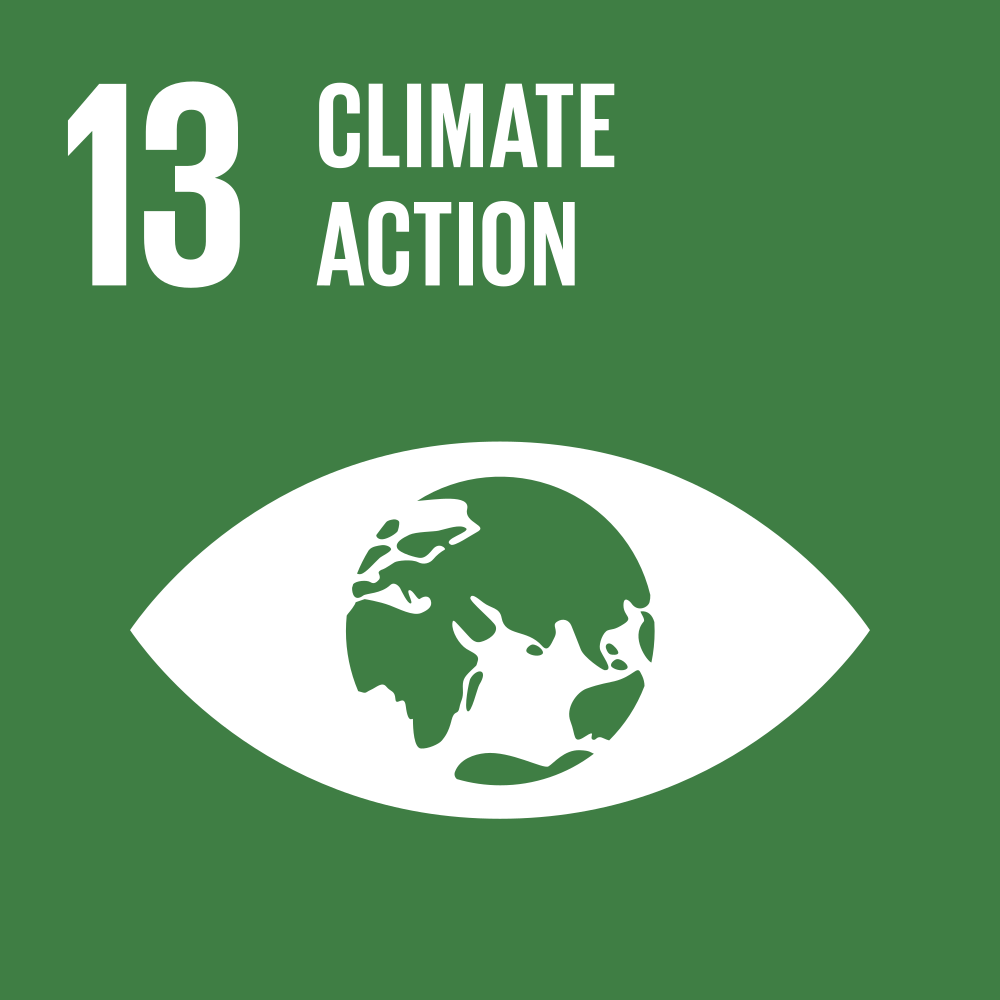
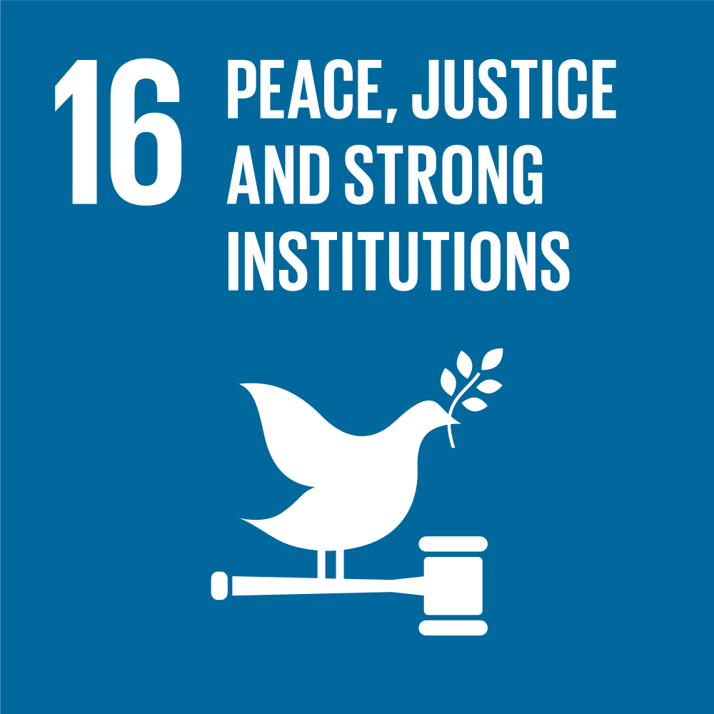

About
Aníbal Astobiza graduated in Philosophy from the University of Deusto, Master in Social Psychology, D.E.A. (Diploma in Advanced Studies) from the University of the Basque Country/Euskal Herriko Unibertsitatea and Doctor in Cognitive Sciences and Humanities from the University of the Basque Country/Euskal Herriko Unibertsitatea.
Research
He researches at the intersection of the cognitive, biological and social sciences and has published on these and other topics. He has carried out postdoctoral research stays at the IFS-CSIC, the Oxford Uehiro Centre for Practical Ethics at Oxford University and the Center for Bioethics at Harvard University. He was a member of the Graduate Common Room (GCR) of Christ Church College, Oxford University (2019).
- IFS-CSIC
- Postdoctoral stay
- Oxford Uehiro Centre for Practical Ethics
- Postdoctoral stay, University of Oxford
- Center for Bioethics
- Postdoctoral stay, Harvard University
- Christ Church College
- Graduate Common Room, University of Oxford, 2019
Specialization and Interests
His areas of specialization are the philosophy of cognitive science, specifically social cognition, history of psychology, psychiatry and neuroscience, data ethics, AI ethics, philosophy of complexity sciences and experimental philosophy and psychology of AI. His areas of interest include Bioethics/Neuroethics (enhancement technologies).
Publications
For a selected list of publications, please visit ORCID.
Sustainable Development Goals
In 2015, UN member states agreed to 17 global Sustainable Development Goals (SDGs) to end poverty, protect the planet, and ensure prosperity for all. Aníbal’s work contributes towards the following SDGs:

Good Health and Well-being
Quality Education
Reduced Inequalities
Climate Action
Peace, Justice and Strong Institutions
Contact
Bluesky @anibalmastobiza.bsky.social · X @anibalmastobiza · Linktree @anibalmastobiza